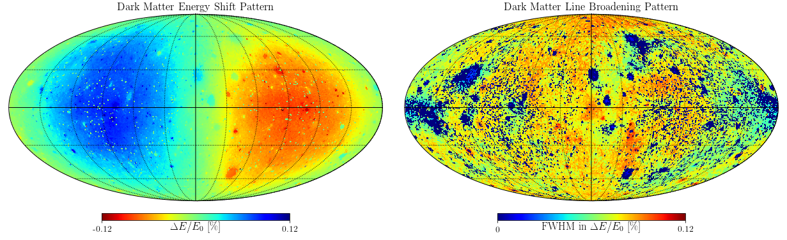
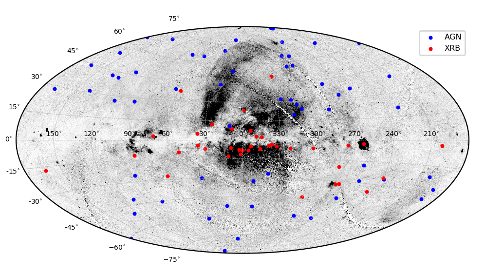
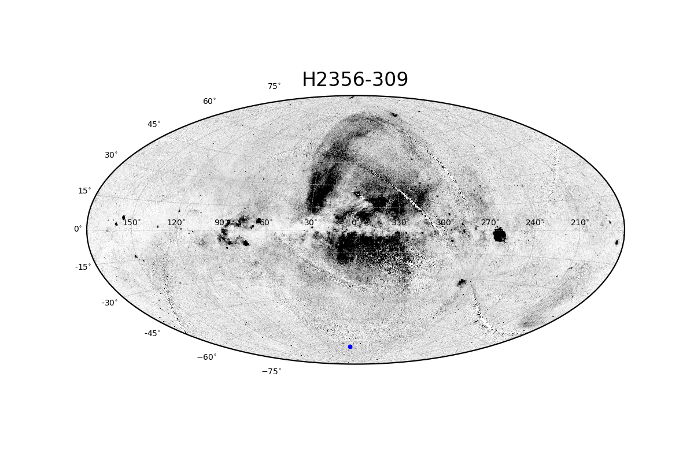
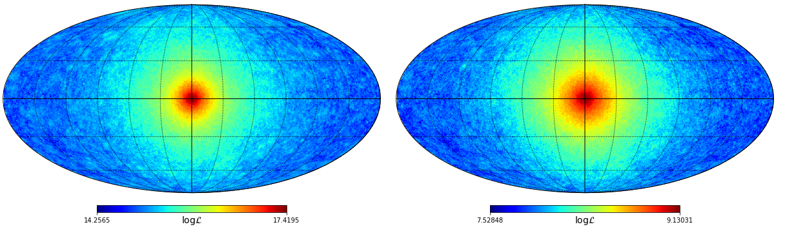
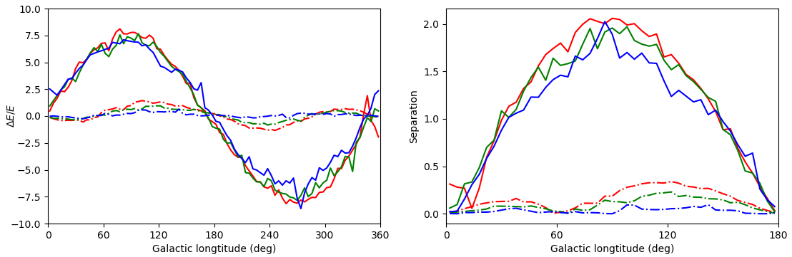
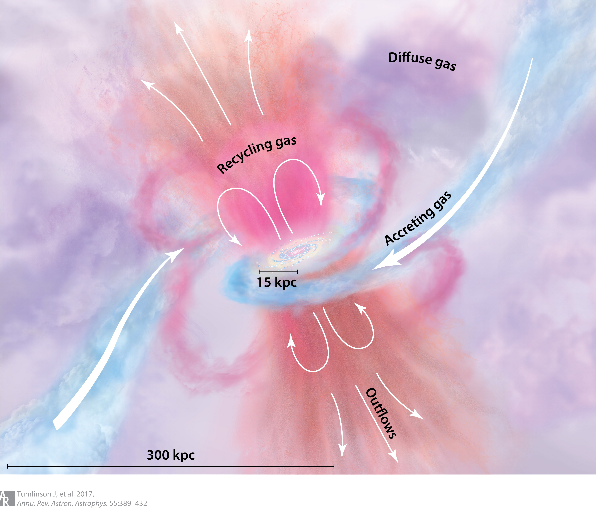
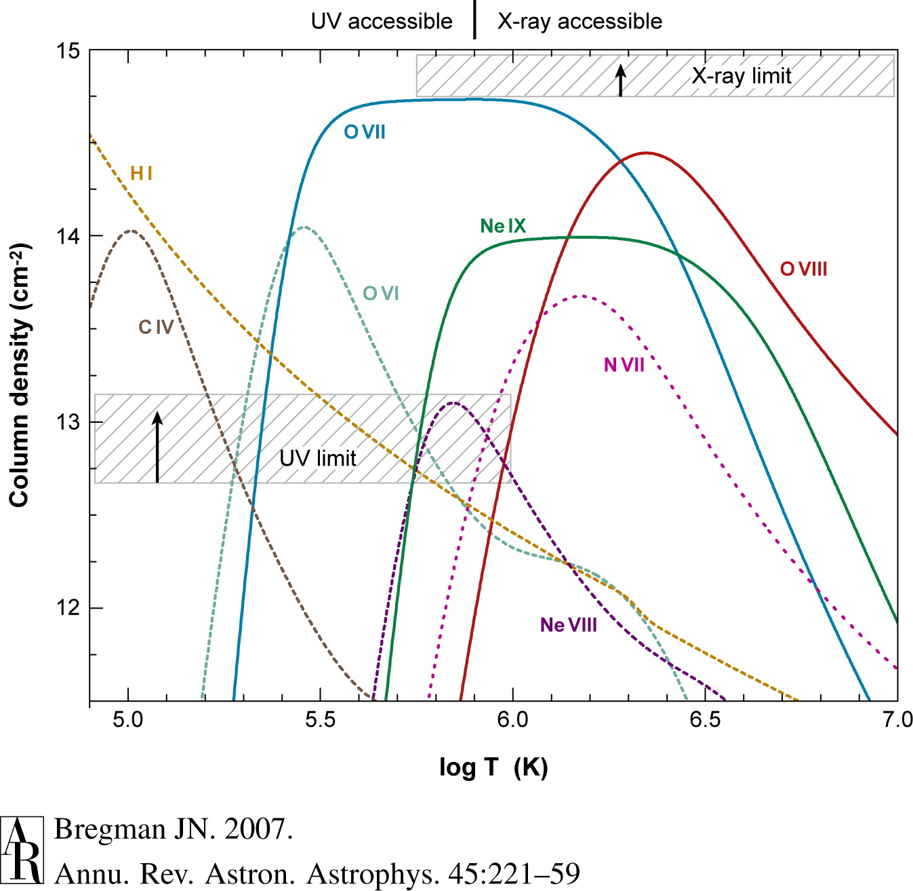
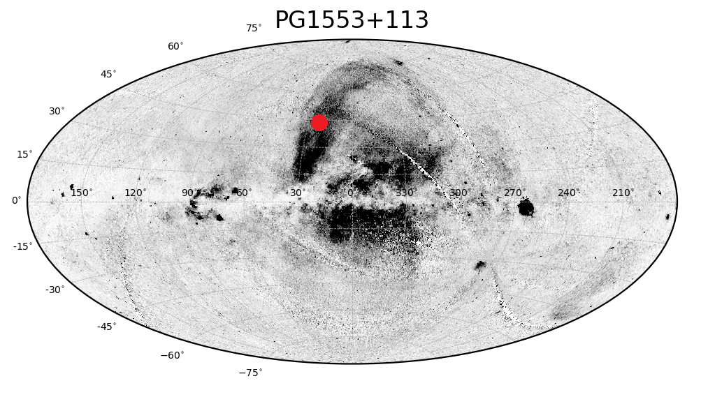

About Me
Hi, I am Dawei Zhong. I won my Bachelor of Science degree at Department of Astronomy, Xiamen Universiy.
I am now taking gap year to develop my understanding of cosmology and dark matter.
My current professional interest lie in the cutting-edge of physics and astronomy: Dark Matter.
I am working on how to find the astronomical direct evidence (smoking gun) of dark matter. It is expected we will enter the era of dark matter astronomy in the future.
My undergraduate work mainly focus on hot, highly-ionized circumgalactic medium (with T ~ 106K).
Most previous hot CGM observations concentrate on the abundant hot gas (helium-like ion O VII) inside or around the Milky Way.
My collaborator and I focus on less frequently studied hot gas called O VIII (with only one electron outside the oxygen nucleus) and investigate its all-sky properties.
My Research Project
In this page you could find more about my researches on dark matter and circumgalactic medium of the Milky Way.
Dark Matter Astronomy in the Milky Way

In this project, we concentrate on dark matter in the Milky Way,
estimating its observables with Latte simulation
result and discussing how we could find those signals with upcoming X-ray mission.
Specifically, we examine the centroid shift (left) and broadening pattern (right) of DM narrow emission features (see the Figure above).
We also also consider both DM annihilation and decay processes for photon production. We purpose that a pair observations at symmetry position about the Galactic center
could be simple and reliable method for dark matter diagnosis (or make sure whether we've found real dark matter signal). As an example, the Athena X-IFU could identify
a separation of the centroid of two dark matter narrow emission (if we could detect them) two times as its energy resolution at l=90 degree and 270 degree, while it would find two lines at the same energy
(could not be separated by the telescope) if they are ordinary gas emission.
I have presented an iPoster in the 235th AAS meeting in Hawaii.
Click here for more details about my project
XMM-Newton Survey for Local O VIII Absorber

This is the first and most comprehensive study for the O VIII absorption properties inside and around the Milky Way,
and help us stand closer to the understanding of hot gaseous corona of galaxies and the solution of the missing Galactic baryon problem.
Together with my collaborator Zheng Zhou,
we conducted an all-sky survey of hydrogen-like O VIII absorber in totally 99 directions (see the figure above). The temperature of these
highly-ionzied gas is about millions degree, and the most abundant component has been greatly studied. In contrast with uniformly distributed O VII,
we found most O VIII locates near the Galactic plane. Click here for more details about my project
Local Hot Gas Along the H 2356-309 Sight-line

We found in the survey project an evidence that indicates the Milky Way has a multiphase hot gas corona. Previous researches believe that the hot gas are iso-thermal
(or the temperature is the same everywhere). The H 2356-309 sight-line has a 3.1 sigma O VIII and 1.9 sigma O VII, and the measured temperature is 2.3×106 K. This is higher
than the sight-line of Mkn 421, PKS 2155-304 and 3C 273. Also, base on our calculation result, it challenges the assumption that O VII and O VIII have same spatial distribution,
and suggested that O VIII has a significant longer path length extending into Galactic halo. Click here for more details about my project.
Contact
I am willing to talk with people about my research and any interesting things.
Please feel free to leave me a message if you have any question.
Email:
dzhong4@uci.edu zhongdw0408@stu.xmu.edu.cn
Dark Matter Astronomy in the Milky Way:
What will the Milky Way looks like and how we could see this
Thank you for your interest. Here you could find more details of our research!
Outline
- Background
- What dark matter signal would be
- Search for smoking guns of dark matter
Background: what you need to know about astronomical searching of dark matter
Human beings have make several progresses to the understanding of dark matter.
Scientists have proposed various kinds of particle candidates.
They also spare no effort to search the smoking gun for dark matter from both particle physics and astromocial sides.
Currently, particle observers find nothing in ground-based dark matter experiments.
In contrast, astronomers contribute a lot in the game.
Goodenough & Hooper (2009) and Hooper & Goodenough (2010)
discovered that the gamma-ray photon emission from the Galactic center region is stronger than theoretical prediction, which is explained to be the
dark matter annihilation signal.
Besides, Bulbul et al. (2014) and Boyarsky et al. (2014)
found an unresolved X-ray emission line at 3.5 keV, which is explained as the decay signal of sterile neutrino as dark matter.
Since they could be also explained as astrophysical radiation, these findings do not constitute a discovery of dark matter.
However, we also believe the possibility to find DM direct signals from the sky.
What dark matter signal would be: inside the Milky Way
The "dark matter sky", or what the sky would be in dark matter radiation, depends on the properties of dark matter as well as
the distribution of dark matter. Since the properties will only add one coefficient before the contribution of dark matter distribution,
and since we still have no idea what stuff dark matter really is, we only focus on the structure of dark matter in the Milky Way. We use the
dark matter data from the Latte simulation and
estimate the spectrum and flux of dark matter in the Milky Way. The figure below shows the centroid shift (left) and broadening pattern (right) of dark matter spectrum.
In the left panel, the blue (red) part means the observed dark matter spectrum here is blueshift (redshift) from its original energy. In the right panel,
the emission line broadening is small in dark blue part, while the broadening is large in red part.
We also consider the annihilation and decay radiation of dark matter. Similarly, we also focus on the contribution of Milky Way structure and
present the all-sky result below. The left and right panels are annihilation and decay luminosity maps, respectively.

Search for smoking guns of dark matter: from the energy shift pattern
Even we could detect some high-energy photons such as the 3.5 keV line, they might be interpreted as dark matter emission or astrophysical radiation.
The energy shift of dark matter spectrum will contribute to diagnosis of emission origin.
Speckhard et al. (2015) suggested that the study of frequency shift of a detected unresolved Galactic
line might uncover the origin of the signal. Inside the Milky Way, a dark matter line has different sign of the shift from ordinary gas line due to
their distinct velocity distribution. Assuming they are at the same energy in the rest frame, dark matter line would be blueshift (redshift) while
the ordinary gas line might be redshift (blueshift) along the same direction.
This only occurs at b = 5 degree and l within -40 degree to 40 degree accoring to the paper.
However, for the reason of unknown rest frame energy, we still could not decide whether the unresolved emission feature is redshift or blueshift.
Besides, one single detection along certain light-of-sight could not rule out the possibility of unidentified extragalactic photon origin.

According to the energy shift comparison of dark matter and the ordinary gas (see the left panel of the figure above), we purpose we could use the
difference of spectral line center to determine the origin of an mysterious line. Specifically, we focus on the Galactic longitude l=90 degree and l=270 degree
(or -90 degree). If we could detect two unresolved lines at these two observations with Athena X-IFU, we could find the dark matter line would be separated two times
as the energy resolution of the telescope. This would not happen for the ordinary gas emission feature. That is, if Athena detects two lines at two directions and they're separated,
these line is very likely to be originated from the dark matter.
Local O VIII Hot Gas:
All-sky survey for O VIII and CGM properties
Thank you for your interest. Here you could find more details of our research!
Outline
- Background
- Why O VIII matter
- How does the O VIII distribute in the Milky Way
Background: CGM and the missing baryon problem

The circumgalactic medium (CGM) plays an important role in the evolution of galaxies
(please refer to Tumlinson et al. (2017) for CGM review).
As the figure from Tumlinson et al. (2017) shows,
the CGM provides star-forming fuel and recycles materials through the feedback process.
Observations and simulations shows that the CGM is a multiphase medium.
Namely, it contains various kinds of gas components with different temperature.
For example, the netural hydrogen (HI) is a representative of cold gas with temperature below 104K,
and the lithium-like oxygen ion (O VI, only three electrons outside the nucleus) is an important part of warm gas
with temperature from 105 to 106K.
The study of CGM properties will contribute to the solution of some big problems, one of which is the missing baryon problem:
people find that the measured baryon content from current universe (see e.g., Fukugita et al. (1998))
is less than the baryon measurment from the CMB (see e.g., Planck Collaboration (2013)).
The unresolved CGM components might account for the missing part of baryon. More comprehensive and detailed surveys are needed to solve the problem.
(please refer to Bregman (2007) for missing baryon review)
Why O VIII matter: for CGM properties and the missing baryon problem

Our project focus on the hot gas component with temperature from 105.5 to 106.5K.
According to simulation result (the figure above from Bregman (2007)),
the most abundant gas component is the helium-like ion O VII (only two electrons outside the nucleus).
The Galactic O VII and its properties has been intensively studied for nearly 20 years
(see e.g. Miller & Bregman (2013) and Fang et al. (2015)
for absorption properties, and Henley & Shelton (2012) for emission properties).
Meanwhile, people haven't studied the second abundant hydrogen-like O VIII (only two electrons outside the nucleus)
and other metal species for their relatively lower content.
Since the analysis of multiple ion species will give a constrain on gas temperature and other physical properties of hot gas component,
it motivates us to perform a comprehensive examination of O VIII content inside and around the Milky Way.
According to the simulation, people would find the missing part of baryon from the hot gas. Therefore, the survey of O VIII will contribute
to the estimation of baryon content in the missing part.
How does the O VIII distribute in the Milky Way
In this project, we perform the fitting for Galactic O VIII absorption line in the background Active Galactic Nucleus (AGN) and
X-ray binary (XRB) X-ray spectra. We consider totally 99 line-of-sight (see the figure above) and adopt a Voigt profile for the fitting.
Finally, we detected O VIII absorption lines at above three sigma level in 10 AGNs and 16 XRBs sight-lines including first detection in 3 AGNs and 6 XRB sight-lines.
We conclude that there is more O VIII gas near the Galactic disk than in the Galactic halo.
We also estimated gas temperature as T~1.7-2.3*106 K under the collisional ionization equilibrium.
Note that some line-of-sight will cross the Loop I, Loop IV and other structure, so our result would not be a pure indication of halo hot gas properties.
Local Hot Gas Along the H2356-309 Sight-line:
A complex gas environment
Thank you for your interest. Here you could find more details of our research!
Outline
- Background
- What the gas property in this direction
- Some further discussion with recent paper
Background: some assumption and common sense
When it comes to the physical properties of the hot gas, it is assumed in a simple way
that the hot gas inside the Galactic halo has the same temperature. This can be seen from the
proposed halo gas model in e.g. Miller & Bregman (2013).
Besides, different gas components such as O VII and O VIII might distribute in the same place.
This is also supported by the calculation of hot gas density and size in
e.g. Fang & Jiang (2014).
Because of the lack of enough observational evidence, these assumptions are not fully supported
or challenged in a convincing way.
What the gas property in this direction: multiphase hot gas and different spatial distribution
One of the interesting thing we found from the X-ray absorption of O VII and O VIII along the H 2356-309
sight-line is that the content of O VIII is more than that of O VII, while these would generally not happen
based on our all-sky O VIII survey. Specifically, we identify Galactic
O VII and O VIII absorption lines at 1.9 and 3.1 sigma levels, respectively.
If they have the same origin, the gas temperature would be ~2.3×106K, which is much higher than
the Mkn 421, PKS 2155-304 and 3C 273 sight-line. This indicates that the Milky Way might have a multiphase
hot gas corona.

Moreover, we adopt the emission measurament from Henley & Shelton (2012)
and estimate the density and the size of O VII and O VIII together with absorption measurament.
We challenged the assumption that O VII and O VIII have same spatial distribution,
and suggested that O VIII has a significant longer path length extending into Galactic halo.
The cartoon picture above shows one possible situation of gas distribution of O VII (blue) and O VIII (red),
which indicates that O VIII gas distributes in a more diffuse way than O VIII gas.
Some further discussion with recent paper: another two temperature gas

Note that Das et al. (2019) also detect Ne X absorption line
along the 1ES 1553+113 (or PG 1553+113) sight-line (see above), and it indicates the X-ray absorber has two
temperatures here (see Das et al. 2019).
In my opinion, the two temperature gas here does not indicate the halo gas has multiple temperature
since this sight-line cross the Loop I structure while our result would be pure halo gas contribution.